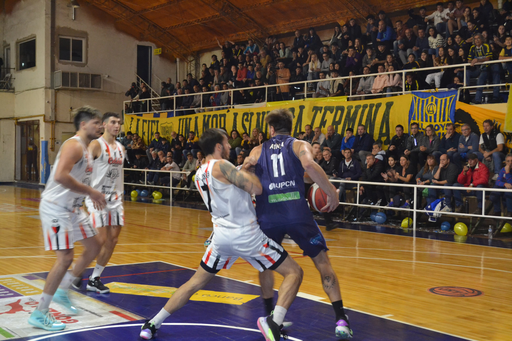

All Boys el máximo campeón de la Liga Cultural con 43 campeonatos, seguido por Atlético Santa Rosa con 10 y el Club General Belgrano con nueve. Paralelamente, desde si primera edición en 1929, siempre mantuvo el lugar de máximo campeón del certamen. Entre los años 1963 y 1977, All Boys ganó 14 de los 15 torneos disputados, siendo el campeonato oficial de 1966 el único que no pudo ganar (el campeón fue Deportivo Uriburu). De esos 14 títulos, 11 fueron de manera consecutiva (entre 1967 y 1977), récord que posee en la actualidad. Otras seguidillas importantes fueron entre 2004 y 2007 y entre 2015 y 2021. Se coronó en la Liga Cultural en los años 1929, 1931, 1933, 1934, 1943, 1948, 1949, 1950, 1954, 1963, 1964, 1965, 1967, 1968, 1969, 1970, 1971, 1972, 1973, 1974, 1975, 1976, 1977, 1981, 1983, 1984, 1985, 1987, 1988, 1990, 1994, 2001, 2004, 2005, 2006, 2007, 2011, 2015, 2016, 2017, 2018, 2019,16 2021171819 All Boys es el único club en ganar la Liga Cultural en todas las décadas, como así también uno de los cinco clubes que la ganaron en sus dos formatos (torneo anual y Clausura y Apertura) junto a Independiente de Jacinto Arauz, Club General Belgrano, Atlético Santa Rosa y Huracán de Guatraché
| N.º | Nacionalidad | Posición | Nombre | Edad | Equipo Anterior |
|---|---|---|---|---|---|
| 1 | Argentina | Portero | Luis Alberto González | 21 años | Club Atlético Olimpo |
| 2 | Argentina | Portero | Lucas Rubén Vasallo | 32 años | Olimpo |
| 3 | Argentina | Defensor | Pedro Ferranti | 34 años | Mitre (SE) |
| 24 | Argentina | Delantero | Lucas Marcelo Del Rio | 37 años | Huracan de Saladillo |
Colón se llevó la clasificación de Santa Rosa  Colón de Chivilcoy venció como visitante a All Boys de Santa Rosa por 72-57 y barrió la serie de playoffs de la División Sudeste de La Liga Federal de Básquet.